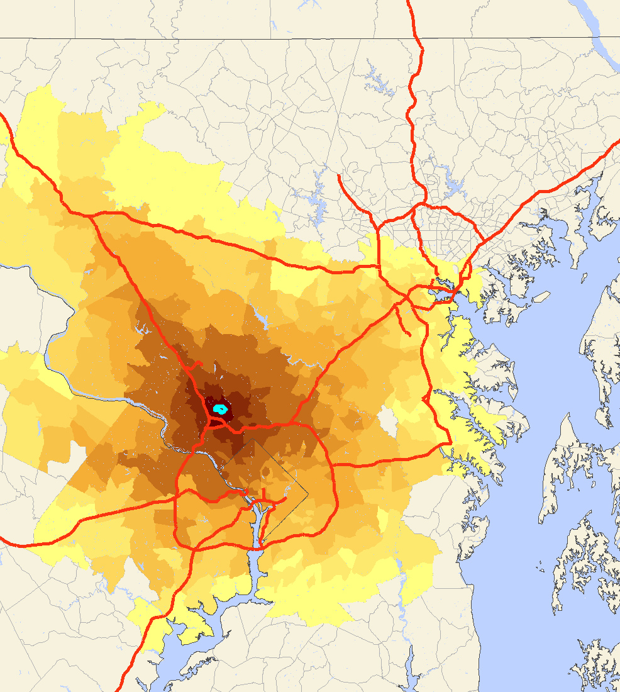
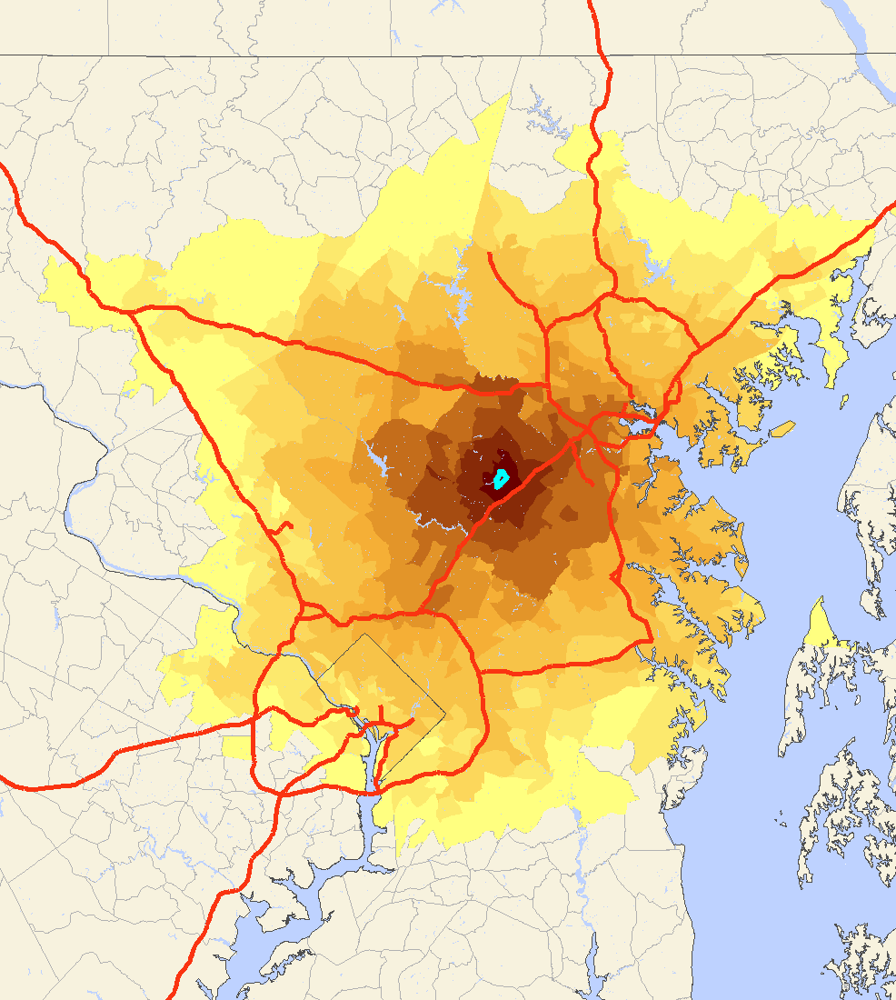
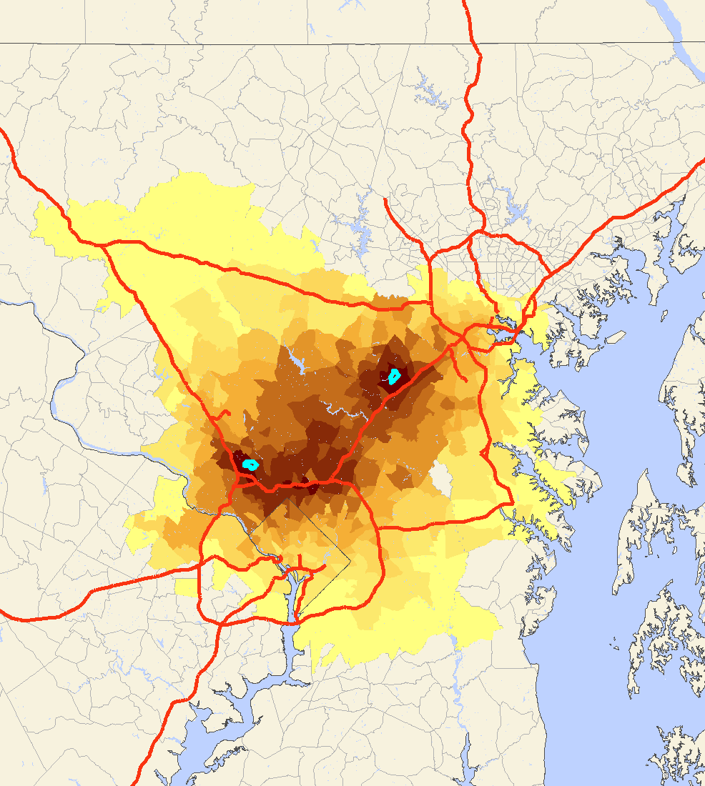

SILO is designed as a microscopic discrete choice model. Microscopic, because every household, person and dwelling is treated as an individual object. Discrete choice means that decisions to relocate or develop a new dwelling are modeled explicitly.
All decisions that are spatial (household relocation and development of new dwellings) are modeled with Logit models. Initially developed by Domencich & McFadden (1975), such models are particularly powerful at representing the psychology behind decision making. Other decisions (such as getting married, giving birth to a child, leaving the parental household, upgrading an existing dwelling, etc.) are modeled by Markov models that apply transition probabilities.
An important innovation of SILO is to explicitly represent constraints in location choice. The map on the left below shows with a turquoise dot a work location in North Bethesda, MD. A household travel survey reports the average commute distance. Using the trip length frequency distribution of the survey, areas were color-coded to show the probability of this person to live.
  
The map in the center shows the same home location probability for a person working in Columbia, MD. If these two persons live in the same household, their joint area within a reasonable distance to the two work locations is shown in the map on the right. SILO explicitly represents this constraint when searching for a new housing location. Further constraints explicitly represented in SILO are housing costs and total transportation costs of a given location.

SILO is designed to be closely integrated with a travel demand model.